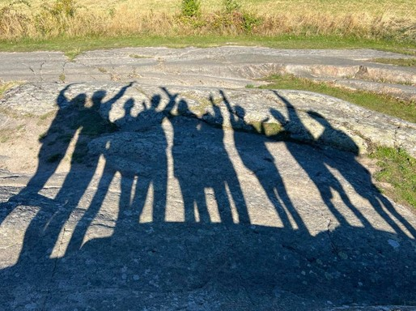
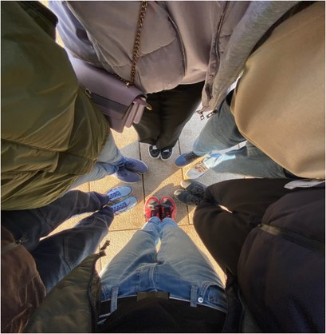
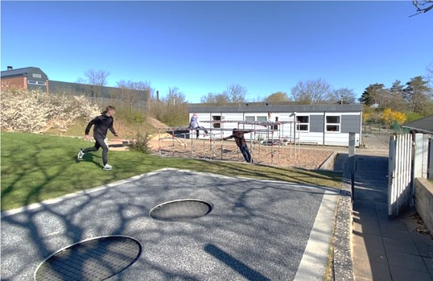

10. Klasse
Hvem er vi
Frydenhøjskolens 10. klasse er et tilbud til unge med autisme og andre
følgediagnoser.
Frydenhøjskolens 10. klasse ligger i pavillonen ved siden af frydenhøj KLUB. Her har vi
god plads, ro og mulighed for at skabedet, vi gerne vil sammen. Hos os er der plads til
alle. Vi forsøger at tilpasse din skoletid efter dine ønsker og behov. Vi vil sammen med
dig lægge en plan for dit skoleår. Ud fra om du ønsker at afslutte med en eksamen eller
flere, eller om du ønsker fokus på andre personlige eller sociale mål.
Lejrskole
i September måned tager vi på
en 5 dags lejrskole til bornholm. Her bor du i små rækkehuse med 1-2 klassekammerater,
hvor i selv skal sørge for morgenmad og frokost. Aftensmaden spiser vi sammen, og vi er
heldige at have en køkkendame, som laver mad til os. Vores lejreskole indeholder både
udflugter, hviledage og sociale aktiviteter i det omfang man kan.
Klub
Nogle dage er der mulighed
for at blive hængende efter skole og hygge sig med de andre elever.
Mandag til Torsdag kl. 17.30 - 21.30 er der mulighed for at komme i aftenklub sammen med
sin klassekammerater og de andre unge i frydenhøj KLUB. På udvalgte dage, 1-2 gange om
måmeden, vil der være en pædagog med fra klassen
Et anderledes år
Vi tilbyder et 10. skoleår, som bliver tilrettelagt ud fra dine ønsker. Du har mulighed
for at afslutte med FP9 eller FP10 i dansk, matematik og engelsk.
Hvis du hellere vil bruge skoleåret på at blive afklaret i forhold til din fremtidlige
uddannelse, så besøger vi sammen de forskellige skoler, uddannelsessteder og
virksomheder. Derudover er der mulighed for at komme i skolepraktik eller brobygning på
de uddannelser og skoler, som du synes er spændende, og i præcis det omfang der passer
dig.
Der er også mulighed for at komme i erhvervspraktik indenfor de områder og fag, du
finder interessant. Vi har et godt netværk af virksomheder, med dygtige mennesker, der
glæder sig til at modtage nye praktikanter.
Skoledagen samt undervisning
Skoledagen begynder kl. 8.30, men der er
allerede mulighed for at komme fra kl. 8, hvor
man kan få sog en kop te og lidt morgenmad.
herefter er der undervisning til kl. 14.00 og
fredag til 11.45.
Du skal have undervisning i dansk, matematik
og engelsk. Der vil være mulighed for at vælge
tysk og fransk. Dette vil foregå på
frydenhøjskolen sammen med en 9. Klasse
Derudover har vi valgfag, som indeholder
idræt. madkundskab og livsduelighed mm.
livsduelighed er med fokus på at være ung,
det ansvar og de forpligtelser, der følger med.
Vi arbejder eksempelvis med, hvordan man
finder et fritidsarbejde, hvordan man får en
bolig, og når man engang skal flytte
hjemmefra. hvad koster det, og hvordan får
man råd til det hele? Vi arbejder også med
focus på de sociale spilleregler såsom
bekendtskaber, venskaber, kærester,
værtskab osv.
Fotos Fra 10 Klasse
×




Tidligere elever
"Man kan få indflydelse på sin 10. klasse. Selv være med til at bestemme målet"
Max 16 år.
"Rart at gå i 10. klasse efter et presset 9. klasses år med konstante prøver"
Sofia 16 år.
"10. klasse hjalp mig til at finde ud af, hvad jeg ville bagefter"
Tomas 17 år.
"Det var fedt at være på Lejrskole"
Adrian 17 år.
"Du kan vælge at tage eksamen, eller lade være, alt efter hvad du vil bruge dit år på"
Rasmus 16 år.
"Der er mulighed for at holde pause indenfor og udenfor. Du har dit bordtennisbord indenfor, og masser af plads udenfor"
Max 16 år.
**bordtennisbord har vi ikke mere**
Frydenhøjskolen 10KA "Pavillonen"
Bødkerporten 4 2650 Hvidovre +45 61 97 16 60